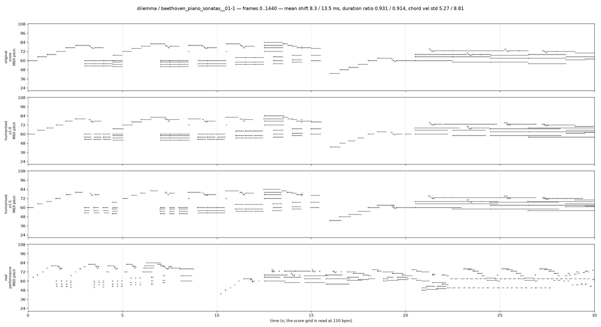
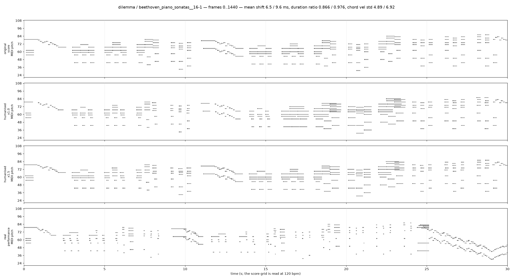
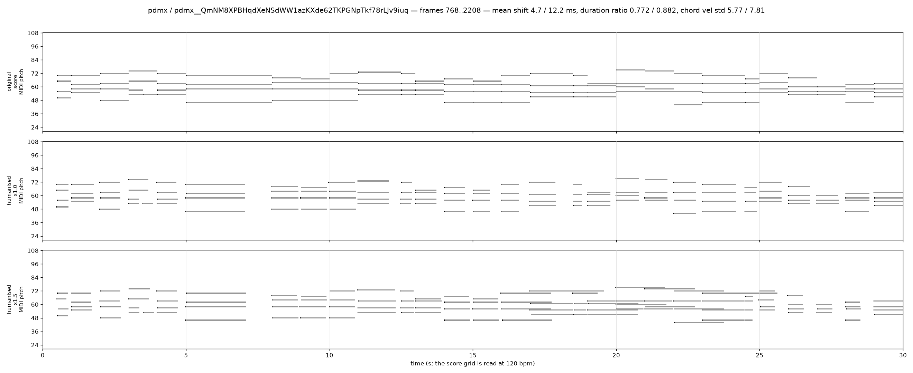
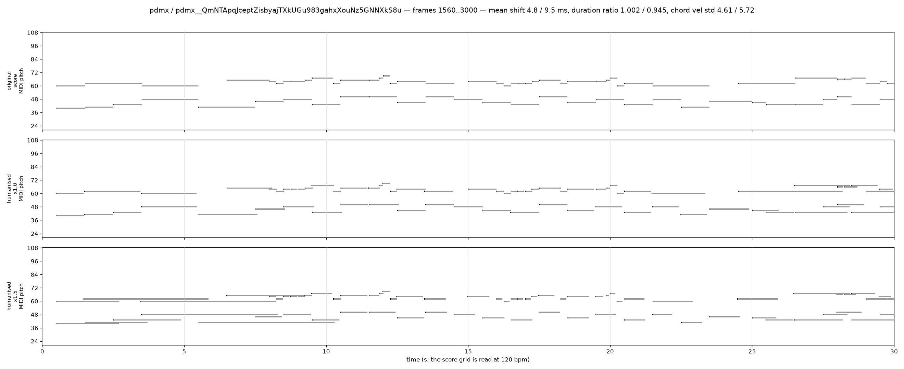
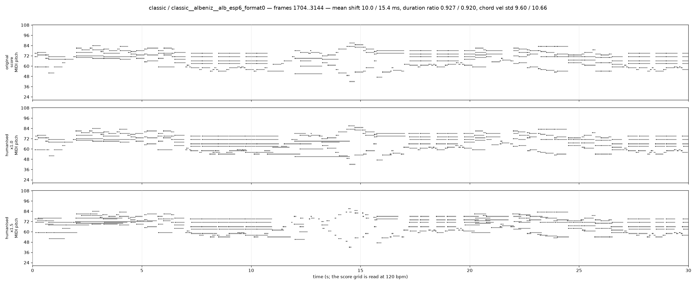
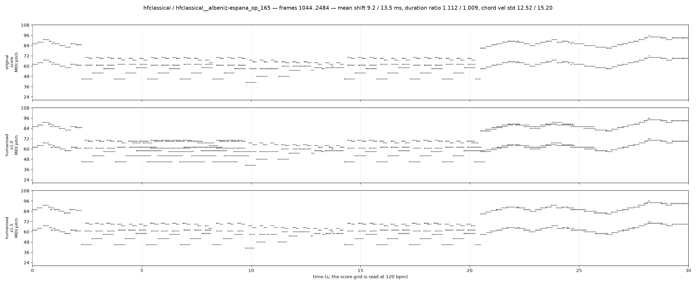

Needs internet: the MIDI players and the soundfont are loaded from a CDN. Serve this directory over HTTP (the players cannot fetch .mid over file://).
A score render and a humanised re-rendering of it are the J5b/J5c view-B positive pair on the score side: the same notes, played rather than notated. Six rules, all drawn per view from the calibrated ranges. (1) Melody lead: the top note of a chord comes in early -- or late, a third of the time, because real pianists do that too. (2) Chord asynchrony: every other note of the group is scattered around its notated onset. (3) Metrical accent: a weak velocity bonus on downbeats and beats, read straight off the 24-frames-per-quarter score grid. (4) A slow dynamics curve: velocity drifts along a random walk between knots a few seconds apart, and half the segments get a rise-fall arch on top. (5) Articulation: one mode per dynamics segment -- legato, normal, staccato, or hold, the pedal-like mode that stretches a note up to 2.5x and is what gives the real duration ratio's upper tail. (6) Residual velocity jitter on every note. Every timing change is at most 30 ms = 1.44 frames, so latent step t of the view is still step t of the original up to one step boundary -- that is the constraint that makes this a view and not a warp. The x1.5 column multiplies every deviation magnitude (ms, velocity, and the articulation ratios' distance from 1) and is the "wide" set of the calibration study, which is what j5c_flat trains with. What the rules do not produce is a tempo curve: there is no rubato here, and the view-gap gate showed that this is the remaining domain cue between a humanised score and a real performance.
One 1440-frame segment (30 s at 48 fps, 60 quarters on the 24-frames-per-quarter score grid) per piece; the two Beethoven scores start at frame 0, where the paired ASAP performance also starts, the four val scores at 25% of the piece. No score augmentation is applied -- no transposition, no tempo factor, no velocity shift -- so the panels differ by the rule set alone. render_view runs on the full note list and the segment is cropped afterwards, as in training.
original on-frame 1.000 velocities 1 chord vel std 0.00
human_1.0 on-frame 0.000 velocities 42 chord vel std 5.27 moved 1.000 (mean 8.3 ms, max 24.6 ms) duration ratio 0.931 (longer 0.336, shorter 0.545)
human_1.5 on-frame 0.000 velocities 34 chord vel std 8.81 moved 1.000 (mean 13.5 ms, max 30.0 ms) duration ratio 0.914 (longer 0.287, shorter 0.664)
performance — reference, not paired with the score

original on-frame 1.000 velocities 1 chord vel std 0.00
human_1.0 on-frame 0.000 velocities 36 chord vel std 4.89 moved 1.000 (mean 6.5 ms, max 25.9 ms) duration ratio 0.866 (longer 0.251, shorter 0.716)
human_1.5 on-frame 0.000 velocities 59 chord vel std 6.92 moved 1.000 (mean 9.6 ms, max 30.0 ms) duration ratio 0.976 (longer 0.239, shorter 0.494)
performance — reference, not paired with the score

original on-frame 1.000 velocities 1 chord vel std 0.00
human_1.0 on-frame 0.000 velocities 38 chord vel std 5.77 moved 1.000 (mean 4.7 ms, max 23.8 ms) duration ratio 0.772 (longer 0.000, shorter 1.000)
human_1.5 on-frame 0.000 velocities 36 chord vel std 7.81 moved 1.000 (mean 12.2 ms, max 30.0 ms) duration ratio 0.882 (longer 0.152, shorter 0.821)

original on-frame 1.000 velocities 1 chord vel std 0.00
human_1.0 on-frame 0.000 velocities 19 chord vel std 4.61 moved 1.000 (mean 4.8 ms, max 24.6 ms) duration ratio 1.002 (longer 0.403, shorter 0.375)
human_1.5 on-frame 0.000 velocities 30 chord vel std 5.72 moved 1.000 (mean 9.5 ms, max 30.0 ms) duration ratio 0.945 (longer 0.319, shorter 0.611)

original on-frame 0.894 velocities 39 chord vel std 5.42
human_1.0 on-frame 0.000 velocities 61 chord vel std 9.60 moved 1.000 (mean 10.0 ms, max 30.0 ms) duration ratio 0.927 (longer 0.240, shorter 0.587)
human_1.5 on-frame 0.000 velocities 85 chord vel std 10.66 moved 1.000 (mean 15.4 ms, max 30.0 ms) duration ratio 0.920 (longer 0.369, shorter 0.513)

original on-frame 1.000 velocities 48 chord vel std 8.14
human_1.0 on-frame 0.000 velocities 66 chord vel std 12.52 moved 1.000 (mean 9.2 ms, max 30.0 ms) duration ratio 1.112 (longer 0.668, shorter 0.082)
human_1.5 on-frame 0.000 velocities 64 chord vel std 15.20 moved 1.000 (mean 13.5 ms, max 30.0 ms) duration ratio 1.009 (longer 0.348, shorter 0.434)
